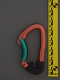

| Image | Summary | ||||
|---|---|---|---|---|---|
 | lucKY VII (bent gate) (CE-0123) | S-spine | n/a | n/a | slight s-spine with distinctive nose |
 | lucKY VII (bent gate) (CE96-0123) | S-spine | n/a | n/a | slight s-spine with distinctive nose |
|  | lucKY VII (bent gate) (webbing keeper) | S-spine | n/a | n/a | overmolded dogbone keeper |
 | lucKY VII (straight gate) (long nose) | S-spine | n/a | n/a | distinctive nose straight gate from Vaude |
 | lucKY VII (straight gate) (short nose) | S-spine | n/a | n/a | distinctive nose straight gate from Vaude |